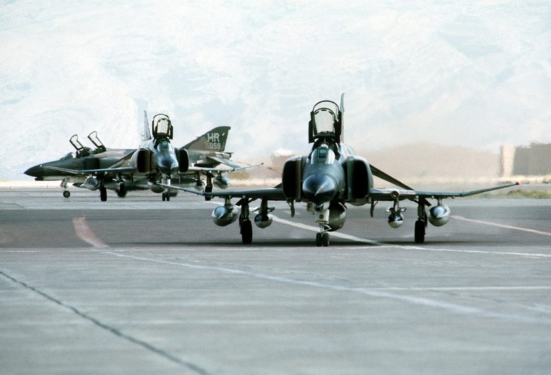
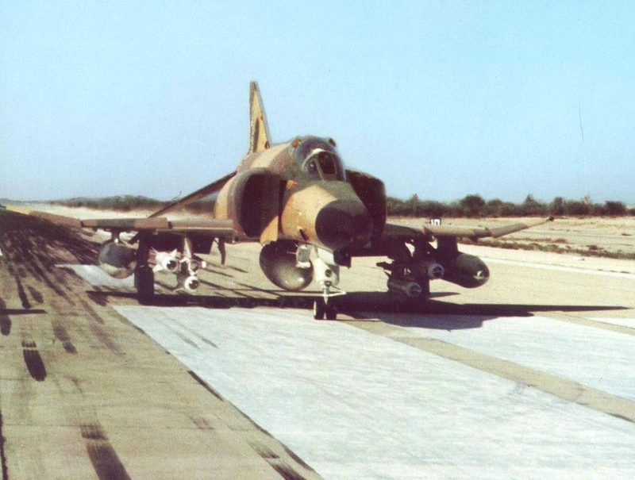
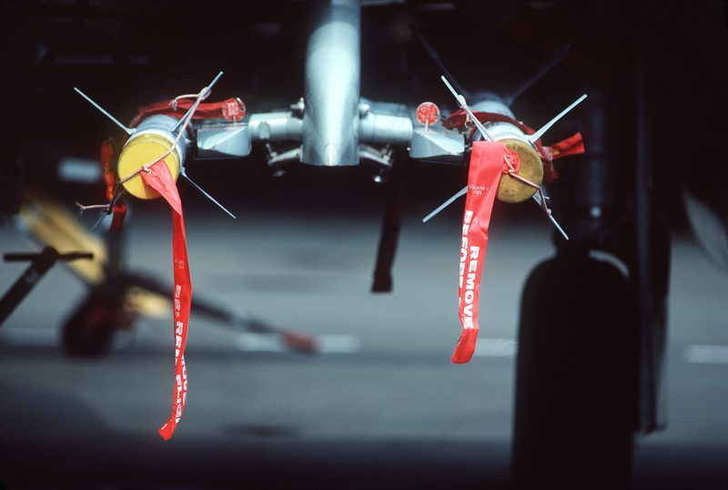

Two F-4 Phantom interceptors, the most capable fighter in the Iranian inventory, went up over Tehran in the early hours of 19 September 1976 to identify a light above the city. Both came home with the same story: the closer they got, the more of their aircraft stopped working. One pilot tried to fire. His weapons panel died in his hands. What makes this case different from every other light in the sky is not what the pilots said. It is that the United States government wrote it down.
All times in this case file are local Tehran time, as recorded in the US Defense Intelligence Agency report filed after the incident. Everything below that is presented as fact comes from that document unless it is explicitly attributed to someone else.
Just after half past midnight on 19 September 1976, the control tower at Mehrabad Airport in Tehran started taking telephone calls from the public. The caller reports came from Shemiran, an affluent district in the north of the city sitting up against the Alborz mountains, and they described the same thing: a brilliant object in the sky that was not behaving like an aircraft, and was much too bright and much too low to be a star.
The controller who took them, Hossein Pirouzi, had at least four separate civilian callers. That number matters more than it looks. A single caller is a curiosity. Four independent people, in the same district, at the same hour, describing the same object, is the point at which a tower stops filing it and starts telling somebody.
What none of them knew was that within an hour the object would be the subject of two military intercepts, and that a written record of the night would eventually be sitting in the archives of five agencies of the United States government.
Mehrabad tower receives calls from at least four civilians reporting a bright object over the city. Some describe it as a bird-like shape, others as a helicopter with a light. There is no helicopter airborne over Tehran.
The duty officer's first answer is that people are looking at a star. Then he steps outside and looks. See Scramble.
An F-4 Phantom II is scrambled and flies toward a point roughly 40 nautical miles north of Tehran. The object is so bright the crew can see it from 70 miles out.
The first Phantom loses all instrumentation and both UHF and intercom communications. See First Intercept.
Ten minutes after the first aircraft launched, a second F-4 is scrambled. In the front seat is Major Parviz Jafari, a squadron commander. Behind him, First Lieutenant Jalal Damirian on the radar.
Damirian gets a lock. Closure rate 150 knots. The size of the return on the scope is comparable to that of a 707 tanker. See The Encounter.
A second, smaller lit object separates from the primary and closes head-on. Jafari reaches for the trigger. See Weapons Failure.
Comms drop out every time the aircraft passes through one specific magnetic bearing. A civil airliner in the same patch of sky loses its radios too. See Electronic Blackout.
The US Defense Attaché in Tehran files a four-page Intelligence Information Report. It goes to the White House, the Secretary of State, the Joint Chiefs of Staff, the NSA and the CIA. See The Document.
Nothing about the decision to launch was casual. Iran in September 1976 was a front-line American ally on the Soviet border, flying American aircraft, and unidentified traffic over the capital at one in the morning was a strategic question, not an amusing one.
The calls were passed to General Yousefi, assistant deputy commander of operations at the Imperial Iranian Air Force. His first assessment was the sensible one, the one any duty officer would make: people are looking at a star. Venus and Jupiter have launched more interceptors over the years than any actual intruder ever has.
Then Yousefi went outside and looked at it himself. What he saw did not resolve into a star. It was, in the language of the report that would later be written about the night, an object brighter and larger than a star. Having seen it with his own eyes, he ordered a fighter up.
At 01:30, an F-4 Phantom II lifted off from Shahrokhi Air Base at Hamadan, around 175 miles west-southwest of Tehran, and turned toward the capital. The Phantom was a serious machine: two engines, two crew, radar, and an air-to-air weapons fit. Iran had bought it precisely so that questions like this one could be answered quickly.

The first Phantom never got close enough to identify anything. It got close enough to establish the pattern that would define the entire night.
The aircraft was flown by Lieutenant Yadollah Nazeri, with a weapons systems officer in the back seat. He took it to a point roughly 40 nautical miles north of Tehran, and the object was not hard to find. According to the report, its brilliance made it easily visible from 70 miles away. Whatever else was in doubt that night, the crew were not searching for a faint smudge on the horizon.
Nazeri closed. At a range of about 25 nautical miles, his aircraft stopped being an aircraft in any useful sense: he lost all instrumentation, and he lost both his UHF radio and his intercom. In a two-seat fighter at night, that means no navigation, no picture, no way to talk to the ground, and no way to talk to the man sitting three feet behind him.
He broke off the intercept and turned back toward Shahrokhi. And here is the detail that turns a malfunction into a case file:
When the F-4 turned away from the object and apparently was no longer a threat to it, the aircraft regained all instrumentation and communications.
— DIA Intelligence Information Report, 1976 Iran incidentRead that as a piece of engineering and it is a strange thing to write in a government document. Avionics fail. Generators drop offline. Radios go quiet. What avionics do not usually do is fail as a function of your range and heading relative to an external object, and then come back the instant you point somewhere else. That correlation is the entire reason anybody is still talking about 19 September 1976. It is also why the second crew was told to go and have a look.
At 01:40, ten minutes after the first Phantom launched and while it was still limping home, a second aircraft was scrambled from Shahrokhi. The man in the front seat would spend the next thirty years being asked about the following twenty minutes.

Major Parviz Jafari was a squadron commander: not a junior pilot on his first night alert, but an experienced officer with a command of his own and a career's worth of reasons not to file a report that would make him sound unbalanced. In the back seat, running the radar, was First Lieutenant Jalal Damirian.
They knew exactly what had just happened to the aircraft ahead of them. They went anyway, which is what an interceptor crew does, and they went with the specific intention of getting a radar picture of the thing rather than just looking at it.
That decision is why this case has a spine that most sightings do not have. Jafari and Damirian did not come home with an anecdote about a light. They came home with a radar contact, a range, a closure rate, and a size estimate.
Damirian acquired the object on radar at 27 nautical miles, in the 12 o'clock high position, with a rate of closure of 150 knots. From that moment the encounter stopped being a visual report and started producing numbers.
The report records the size of the radar return as comparable to that of a 707 tanker. That is not a small drone or a weather balloon signature. On the scope, the crew were closing on something that gave back a return like a four-engined jet transport, at night, over their own capital city, with no flight plan and nobody claiming it.
As the range decreased to 25 nautical miles, the object moved away — at a speed visible on the radar scope itself — and then held station at 25 miles. Not fleeing. Not evading. Maintaining an exact separation from a pursuing fighter, which requires knowing precisely where that fighter is and matching whatever it does.
Twenty-five nautical miles is the same range at which the first Phantom's systems had failed. Whatever else that number represents, both crews independently ran into it.
Visually, the object was almost impossible to size, because it was too bright to look at properly. What the crew could describe was the light itself, and their description is unusually specific for a night sighting: flashing strobe lights arranged in a rectangular pattern, alternating blue, green, red and orange, with the sequence running so fast that all four colours appeared to be visible at once.
The sequence of the lights was so fast that all the colors could be seen at once.
— DIA Intelligence Information Report, describing the object's lightingIt is worth noting what the crew did not report. No structure. No hull. No shape behind the lights. The report is careful about this, and so are we: they described a light source and a radar return, and were explicit that the brilliance defeated any attempt to judge the physical object behind it.
This is the part of the case that separates it from every other pilot sighting on record, and the part professional aviators find hardest to put down.
The object and the pursuing F-4 tracked south of Tehran. Then another brightly lit object — estimated at one half to one third the apparent size of the moon — came out of the original object and headed straight toward the Phantom at very high speed.
Jafari did what a fighter pilot is trained to do when something detaches from an unidentified contact and runs at him head-on. He attempted to fire an AIM-9 Sidewinder.
According to the report, at that instant his weapons control panel went off and he lost all communications, UHF and interphone both.
Not a misfire. Not a missile that failed to guide. The panel that arms and releases the weapon went dead at the moment of firing, together with every radio in the aircraft. No missile left the jet.

Sit with the timing for a second, because the timing is the whole thing. The instrumentation failures on both aircraft correlated with range. This one correlated with intent. The systems did not fail when Jafari acquired the contact, or when he closed to firing parameters, or when he selected the weapon. They failed at the moment he tried to release it.
There is no way to prove causation from a single event, and the report does not claim any. What it does is record, in the flat administrative register of a military cable, that an experienced squadron commander pressed to fire and his aircraft stopped being able to fire or to talk. The same phrasing you would use to log a hydraulic leak.
With no weapons and no radios, and something closing on him, Jafari did the only remaining thing. He flew.
He initiated a turn and a negative-G dive to get away. A negative-G push is not a comfortable manoeuvre, and it is not one a pilot reaches for casually: it throws crew and loose objects up against the canopy and it is an unambiguous statement that the aircraft is trying to leave.
What the smaller object did next is the single most-quoted passage in the file. As Jafari turned, it fell in trail behind him at what appeared to be about three to four nautical miles. As he continued turning away from the primary object, the smaller one went to the inside of his turn.
Cutting inside the turn of a manoeuvring fighter is a specific thing to do. It is what an interceptor does to a target. It requires out-turning the aircraft you are following, which is a question of energy and structural limits, and it requires doing it deliberately.
Then, having done that, it left him. In the report's phrasing, it returned to the primary object for a perfect rejoin.
As he continued in his turn away from the primary object the second object went to the inside of his turn then returned to the primary object for a perfect rejoin.
— DIA Intelligence Information Report, 1976 Iran incident“Rejoin” is a flying word. It is what you call it when a wingman slides back into formation. Whoever wrote this report chose the vocabulary of airmanship to describe what the two objects did, which tells you how it looked from the cockpit.
Shortly afterwards, a third object came out of the other side of the primary, going straight down at great speed. By now the crew had their communications and their weapons control panel back. They watched it descend, expecting to see it hit the ground and explode. Instead, in the report's words, it appeared to come to rest gently on the earth, and cast a very bright light over an area of two to three kilometres.
The interference did not stop when the encounter did. Getting the aircraft back on the ground turned out to be its own problem, and it produced the one piece of corroboration in the whole case that came from someone with no stake in it at all.
The crew descended to 15,000 feet, orbiting to mark the position where the third object had come down. Their night vision had been wrecked by the brightness — a physiological effect the report specifically notes — so after a few circuits of Mehrabad they set up for a straight-in landing rather than trying to fly a visual pattern.
On the way in there was heavy interference on UHF. Each time the aircraft passed through a magnetic bearing of 150 degrees from Mehrabad, the crew lost their communications — UHF and interphone — and their inertial navigation system fluctuated between 30 and 50 degrees. Not once. Every pass, at the same bearing. A repeatable, position-dependent failure.
A civil airliner approaching Mehrabad during the same period lost its communications in the same vicinity, a reporting point identified in the document as Kilo Zulu. The airline crew reported no sighting whatsoever. They saw nothing, they claimed nothing, and their radios failed in the same patch of sky anyway.
That second box is easy to skim past, and it should not be. An independent aircraft, whose crew had no story to tell and no reason to embellish one, experienced the same effect in the same place. It is the closest thing this case has to a control.
There was one more sighting before the night ended. On long final, the Phantom crew noticed a cylinder-shaped object with bright steady lights at each end and a flasher in the middle. They queried the tower, which said there was no other known traffic in the area. The tower had no visual on it — until the pilot told the controllers where to look, between the mountains and the refinery, at which point they picked it up too.
Two military aircraft had suffered correlated systems failures over the capital, a third civil aircraft had lost its radios, and an air force general had watched the object himself. In 1976, in Iran, that combination went in writing to Washington the same day.
The Imperial Iranian Air Force documented the night immediately. The account reached the office of the US Defense Attaché in Tehran, who turned it into a four-page Defense Intelligence Agency Intelligence Information Report — the standard vehicle for getting foreign military information into the American system.
The distribution list is the part that tends to surprise people. The report went to the White House, the Secretary of State, the Joint Chiefs of Staff, the National Security Agency and the Central Intelligence Agency. This was not a file that went into a drawer marked “UFOs” and stopped. It went to the top of the American national security apparatus.
Before it went anywhere, though, there was a daylight follow-up, and it produced the strangest small detail in the file.
The next day, the F-4 crew were flown by helicopter out to the area where they had watched the third object come to rest. The site was a dry lake bed. There was nothing there: no scarring, no debris, no impression, nothing at all to mark the place.
Circling off to the west, the helicopter crew picked up a very noticeable beeper signal. They tracked it to its loudest point, which turned out to be a small house with a garden. They landed and asked the people there whether they had noticed anything strange the previous night. The residents described a loud noise, and a very bright light like lightning.
Nobody has ever established what the beeper signal was, and the report does not speculate. It simply records that the crew went looking in the place they had marked, found nothing there, and found a signal and two corroborating civilians a short distance away.
Everything above is testimony. This is the part that is not. The DIA report was released under the Freedom of Information Act on 31 August 1977 and has been publicly available for nearly fifty years. Below is what it actually says, in its own words. We have not tightened it, joined passages together, or improved it.
“This report forwards information concerning the sighting of a UFO in Iran on 19 September 1976.”
“An outstanding report. This case is a classic which meets all the criteria necessary for a valid study of the UFO phenomenon.”
Accuracy: “Confirmed by other sources.”
Value: “High — unique, timely, and of major significance.”
Read them again as a checklist rather than as a story. Multiple witnesses in different places. Credible, trained witnesses. Radar confirmation of what was seen by eye. The same electromagnetic effect on three separate aircraft. Measurable physical effects on the crews. Performance nobody could account for. That is a description of an evidentiary standard, and the point being made is that this case clears it. Almost none do.
It does not say the object was a spacecraft. It does not say it was extraterrestrial. It does not offer any origin at all. “An outstanding report” is a judgement about the quality of the reporting, not about what was reported. That distinction is the whole reason this file has survived scrutiny for fifty years while flashier cases have not: the American government's own assessment claims nothing it cannot support, which is precisely what makes the claims it does make so difficult to wave away.
Documents do not have careers. People do. Parviz Jafari had one, and he spent it attached to twenty minutes of flying that he could never fully explain and never once walked back.
Consider his position on the morning of 19 September 1976. He was a squadron commander in an air force that had just bought some of the most advanced equipment in the world from the United States. He had taken a serviceable F-4 up on an alert scramble, been unable to complete the intercept, been unable to fire, been unable to talk to anybody, and come home with an account that, written down cold, sounds like something a less careful man invents.
The professional incentive was to file the minimum and let it go. Plenty of pilots have. It is the reason so much of what aircrew see never enters any record at all — and the reason that when someone does report, as Captain Kenjyu Terauchi did over Alaska in 1986, the cost tends to land on them rather than on the phenomenon.
Jafari did the opposite. He gave a full account, and then he kept giving it. He rose through the ranks and retired a general. Over the following decades he described the encounter in interviews, in documentaries, and to researchers, in the same order, with the same details, at the same level of restraint. He did not add a hull to the light. He did not grow the story. Asked what it was, his answer was consistently the honest one: he did not know.
On 12 November 2007, more than thirty years after the night in question, he sat at a press conference at the National Press Club in Washington DC alongside military officers, pilots and government officials from several countries, and told it again. He was by then a retired general of an air force that no longer existed in the form he had served, describing a night when his weapons stopped working over his own capital city.
He was not a man arguing for a conclusion. He was a professional officer reporting an event he could not account for, and declining, for the rest of his life, to pretend otherwise in either direction.
— Flight Crew Files, editorialThat is the part that lands hardest for anyone who has worked in aviation. The reporting culture that keeps the industry safe runs entirely on people being willing to write down the thing that makes them look strange, or wrong, or unlucky. Jafari wrote his down at one in the morning, when he could very easily have written nothing, and the reason there is a document at all is that he and his crews did the unglamorous, procedural, professional thing first.
The document is real and its contents are not in dispute. What has never been settled is what any of it was.
No mechanism has ever been demonstrated. The failures were correlated with range on two separate aircraft, with weapons release on one, and with a specific magnetic bearing on the approach to Mehrabad, and the aircraft recovered each time the condition changed. Deliberate jamming has been proposed and never evidenced. Coincidental unrelated faults on two fighters and one airliner in one night is an explanation that requires its own explanation.
This is the most common sceptical reading, and for the naked-eye portion it is not unreasonable: Jupiter was prominent that autumn, and it accounts for a brilliant, apparently stationary light that observers on the ground could not resolve. What it does not account for is the radar lock at 27 nautical miles, the closure rate, the tanker-sized return, the objects that separated and manoeuvred, or the avionics.
It is the explanation that has quietly resolved a great many sightings, including most of the American UFO wave of the late 1950s and 1960s, which the CIA has since attributed to its own U-2 programme. But no aircraft flying in 1976, from any nation, matches what was reported here, and a covert overflight of an allied capital that ends with an Iranian fighter trying to shoot it down would be a remarkable operational choice.
Nearly fifty years on, no government has published a finding on this case. The report was written, distributed to five agencies, evaluated as high-value and confirmed, released, and then simply left. Nothing suggests a cover-up; the document itself is the strongest argument against one. What it looks like from the outside is an agency that took a good report seriously and then had nowhere to send it.
This case file is anchored on the declassified US government document and cross-referenced against the surviving public record. All links open in a new tab, and all of them are free to read.
The complete four-page Defense Intelligence Agency report, released under FOIA on 31 August 1977. Every quotation, time, range and figure in this case file comes from this document.
The archive entry hosting the DIA report and associated paperwork, including the NSA routing slip below. The Black Vault is a long-running public repository of FOIA-released US government records.
The National Security Agency's internal routing paperwork for the Iran report, evidence of the distribution the case received inside the US system.
Background on the document's release history and the DIA evaluation form ratings.
Jafari describing the encounter in his own words, thirty-one years afterwards, at the press conference that brought together military and government witnesses from several countries.
Used only for cross-checking names, ranks and dates against the primary document, and for its own source citations. Where the two disagreed, the DIA report won.
What people ask about the Tehran incident. Answers here match the case file above and the declassified document it is built on.
In the early hours of 19 September 1976, Mehrabad Airport tower in Tehran received calls from civilians reporting a brilliant object over the city. The Imperial Iranian Air Force scrambled two F-4 Phantom II fighters from Shahrokhi Air Base at Hamadan. Both aircraft reported losing instruments and communications as they closed on the object, recovering only when they turned away. The second crew reported that their weapons control panel went dead at the moment they tried to fire an AIM-9 missile at a smaller object that had detached and closed on them head-on.
Yes. The US Defense Attaché in Tehran filed a four-page Defense Intelligence Agency Intelligence Information Report on the encounter, distributed to the White House, the Secretary of State, the Joint Chiefs of Staff, the National Security Agency and the CIA. It was released under the Freedom of Information Act on 31 August 1977 and has been publicly available ever since. The DIA's own evaluation rated the information “Confirmed by other sources” and its value “High.”
Parviz Jafari was a Major and squadron commander in the Imperial Iranian Air Force who flew the second F-4 Phantom sent to intercept the object on 19 September 1976, with First Lieutenant Jalal Damirian as his weapons systems officer. He later retired as a general. He spoke about the encounter publicly for the rest of his life, including testimony at a press conference at the National Press Club in Washington DC on 12 November 2007, and never altered his account.
No. According to the DIA report, Major Jafari attempted to fire an AIM-9 Sidewinder at a smaller object that had separated from the primary object and was closing on him, but at that instant his weapons control panel went off and he lost UHF and interphone communications. No missile left the aircraft. He broke away with a turn and a negative-G dive, and his systems returned once he was no longer closing.
No, and it makes no such claim. The report documents what trained observers saw, what their radar recorded and what their systems did, then assesses the quality of the case as a report. Its remarks call it “an outstanding report” and “a classic which meets all the criteria necessary for a valid study of the UFO phenomenon” — a judgement about evidentiary strength, not about origin. Nearly fifty years on, no official explanation for the object has been published.